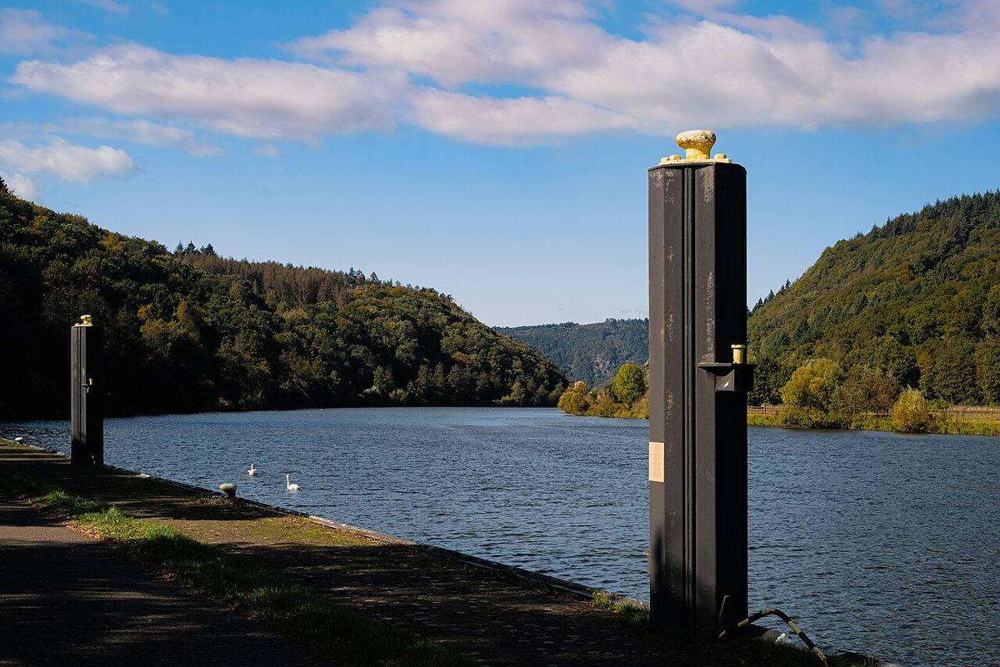

La Saarschleife en el Saarland: Un tesoro natural de Alemania

En el suroeste de Alemania, muy cerca de la frontera con Francia y Luxemburgo, se encuentra uno de los paisajes más fotogénicos del país: la Saarschleife (literalmente "el meandro del Sarre"). Este impresionante meandro del río Sarre, en el estado de Saarland, parece sacado de un cuento, con frondosos bosques y pequeñas aldeas que rodean sus aguas.
¿Por qué visitar la Saarschleife?
Este lugar es perfecto para quienes buscan naturaleza, tranquilidad y unas vistas espectaculares. Además, al ser una zona menos turística que otros rincones de Alemania, podrás disfrutarlo sin grandes aglomeraciones.
Cómo llegar
La forma más sencilla es en coche, desde ciudades como Saarbrücken (unos 30-40 minutos) o Trier (1 hora). Si prefieres transporte público, puedes tomar un tren a Merzig y luego un autobús hasta el pueblo más cercano, Orscholz. Desde allí hay un paseo de unos 20 minutos.
Mejor época para visitar
La Saarschleife es bonita en cualquier época, pero:
- Primavera-verano: Ideal para senderismo y fotos con los árboles verdes.
- Otoño: Los colores dorados y rojos crean un espectáculo único.
- Invierno: Si hay niebla, el paisaje parece mágico (aunque hace más frío).
Lo que no te puedes perder
1. Mirador Cloef
Desde este balcón natural tendrás la vista más famosa de todo el meandro. Hay un pequeño parque con miradores estratégicos para tomar fotos increíbles.
2. Ruta circular del Sarre (Saar-Hunsrück-Steig)
Si te gusta caminar, esta ruta de senderismo te llevará por bosques frondosos y pequeños pueblos con encanto.
3. Paseo en barco
Ver el meandro desde el agua es una experiencia completamente diferente. Hay barcos turísticos que hacen recorridos en temporada.
4. Aldea de Mettlach
Este pueblito a orillas del río es famoso por su cerámica (Villeroy & Boch) y tiene un bonito jardín junto al agua.
Gastronomía regional
Después de explorar, aprovecha para probar:
- Schwenkbraten: Un jugoso filete marinado asado al estilo saarlandés.
- Lyoner: Un tipo de embutido local.
- Viez: Una bebida típica hecha de manzanas ácidas.
Consejo extra: Si tienes tiempo, combina tu visita con otros puntos cercanos como la ciudad de Trier (la más antigua de Alemania) o Luxemburgo, que está a menos de una hora en coche.
La Saarschleife es uno de esos lugares que demuestran que la belleza de Alemania va mucho más allá de sus castillos y ciudades medievales. Un pequeño tesoro natural que merece la pena descubrir.
Haiktec
- Descubre Sajonia: Guía Práctica para Explorar Dresden y sus Alrededores
- Planificador de Eventos y Finanzas para Asociaciones y Voluntarios
- Guía Práctica para Dueños de Perros Ocupados: 7 Estrategias Simples para un Cuidado Canino Sin Estrés
Text mit KI erstellt und automatisch geprueft.